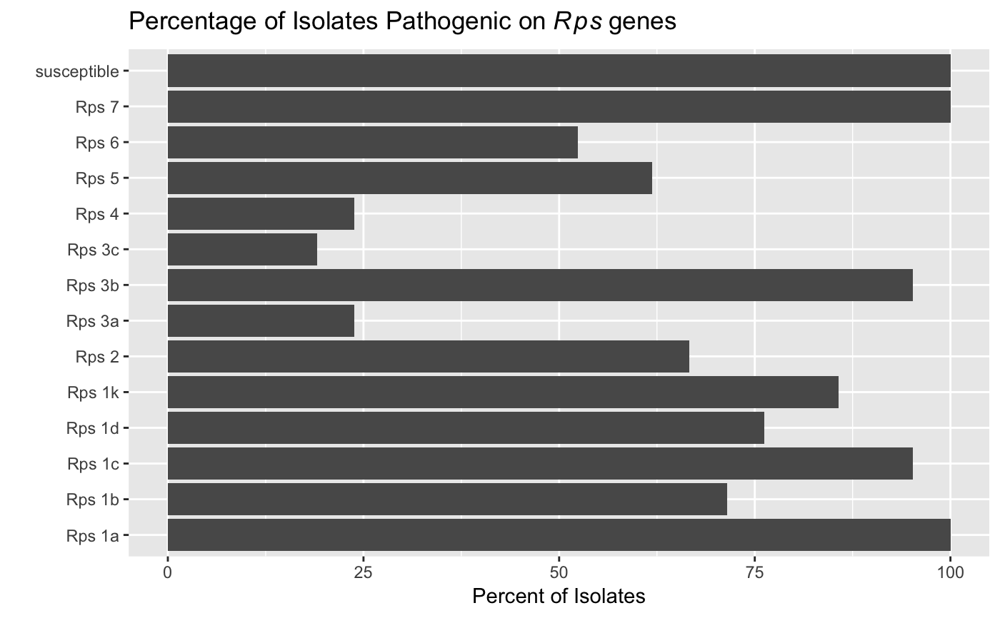

R/summarize_rps.R
summarize_rps.RdThis function will calculate the distribution of susceptibilities by Rps gene.
summarize_rps(x, cutoff, control, sample, Rps, perc_susc)
| x | a |
|---|---|
| cutoff | value for percent susceptible cutoff. Numeric. |
| control | value used to denote the susceptible control in the |
| sample | field providing the unique identification for each sample being tested. Character. |
| Rps | field providing the Rps gene(s) being tested. Character. |
| perc_susc | field providing the percent susceptible reactions. Character. |
returns an object of class() hagis.rps.summary
An object of class hagis.summaries is a data.table::data.table()
containing the following components fields
the Rps gene
the total number susceptible for a given Rps gene in the
Rps field
the frequency with which an Rps gene is pathogenic
# locate system file for import Ps <- system.file("extdata", "practice_data_set.csv", package = "hagis") # import 'practice_data_set.csv' Ps <- read.csv(Ps) head(Ps)#> Isolate Line Rps Total HR..1. Lesion..2. #> 1 1 Williams susceptible 10 0 0 #> 2 1 Harlon Rps 1a 10 4 0 #> 3 1 Harosoy 13xx Rps 1b 8 0 0 #> 4 1 L75-3735 Rps 1c 10 10 0 #> 5 1 PI 103091 Rps 1d 9 2 0 #> 6 1 Williams 82 Rps 1k 10 0 0 #> Lesion.to.cotyledon..3. Dead..4. total.susc total.resis perc.susc perc.resis #> 1 0 10 10 0 100 0 #> 2 0 6 6 4 60 40 #> 3 0 8 8 0 100 0 #> 4 0 0 0 10 0 100 #> 5 1 6 7 2 78 22 #> 6 0 10 10 0 100 0# calculate susceptibilities with a 60 % cutoff value susc <- summarize_rps(x = Ps, cutoff = 60, control = "susceptible", sample = "Isolate", Rps = "Rps", perc_susc = "perc.susc") susc#> Rps N_susc percent_pathogenic #> 1: susceptible 21 100.00 #> 2: Rps 1a 21 100.00 #> 3: Rps 1b 15 71.43 #> 4: Rps 1c 20 95.24 #> 5: Rps 1d 16 76.19 #> 6: Rps 1k 18 85.71 #> 7: Rps 2 14 66.67 #> 8: Rps 3a 5 23.81 #> 9: Rps 3b 20 95.24 #> 10: Rps 3c 4 19.05 #> 11: Rps 4 5 23.81 #> 12: Rps 5 13 61.90 #> 13: Rps 6 11 52.38 #> 14: Rps 7 21 100.00